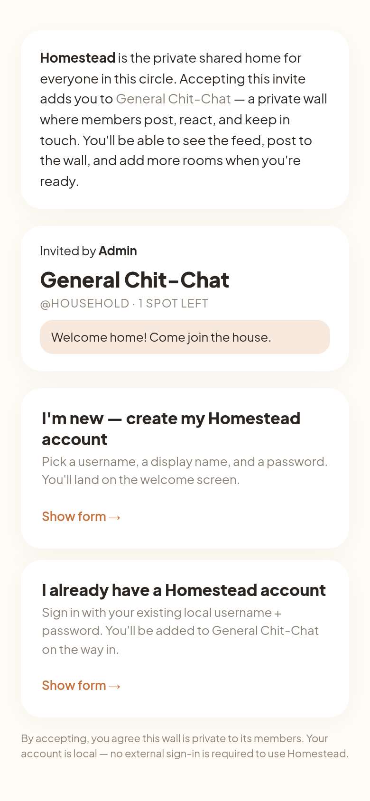
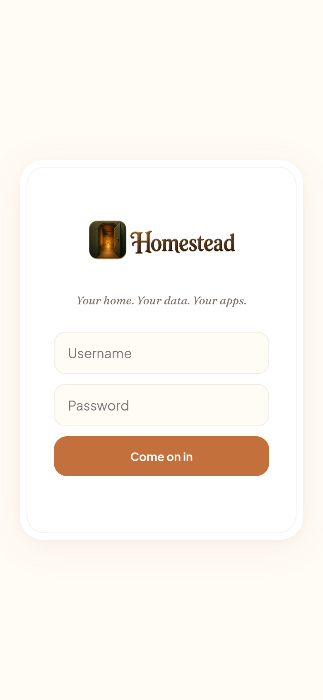
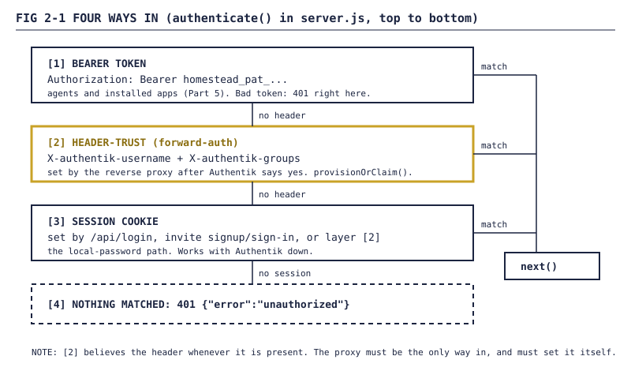
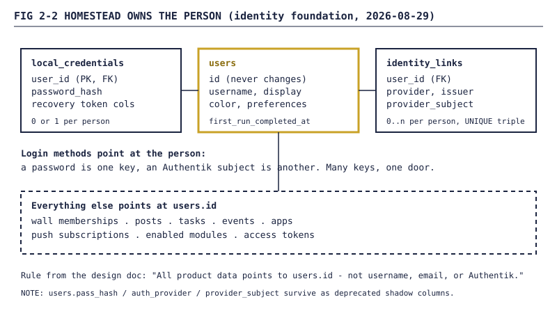
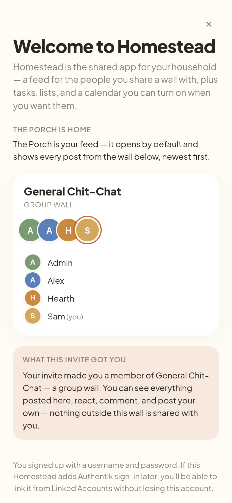
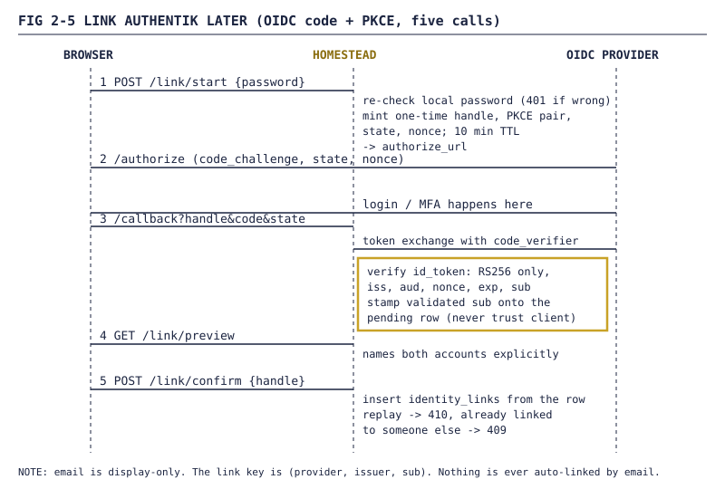

Homestead devlog, Part 2: The front door: logins, invites, and SSO
How Homestead went from one password per person to invite links that create real accounts, Authentik sign-in you can link later, and a break-glass path for the owner, plus the cookie and secret rules that keep the door shut.


FIG 2-0 — The login screen, from a local demo instance (demo data, users alex and sam). Username, password, one button. Everything in this post is about what sits behind it.Part 1 was about what's inside the house. This one is about the front door: who gets in, how they get their first key, and how the owner gets back in when the fancy lock breaks. As before, an agent wrote most of the code. Where "tested" means an agent driving a browser, I'll say so.
1. One password each
v0.0.2 (2026-08-03) had the simplest auth that could work: a users table, one admin seeded from an ADMIN_PASSWORD env var, everyone else created from Settings, bcrypt passwords, and an express-session cookie. The session setup, verbatim:
app.use(session({
secret: process.env.SESSION_SECRET || 'life-app-secret-change-me',
...
cookie: { httpOnly: true, sameSite: 'lax', maxAge: 1000 * 60 * 60 * 24 * 90 }
Remember that ||. It comes back in section 7.
2. The everything-app idea
Two days before v0.0.1 there was already an epic called "Everything-app rollout: Homestead + authentik SSO". I run Authentik in front of other self-hosted apps. If Homestead sits behind the same login, it becomes the front page for all of them. Sign in once, everything opens.
2.1 Forward-auth: the proxy vouches for you
The reverse proxy asks Authentik whether the request is signed in. If it is, the proxy forwards it with X-authentik-username and X-authentik-groups. Homestead never sees a password.
v0.0.5 (2026-08-09) built the user model around that. Authentik became the directory of record and users a profile cache. On a request with the header, provisionOrClaim() claims a seeded row by case-insensitive username or creates one. Groups get replaced, not merged, every request, so there's no managing them in two places. The built-in /api/login stayed as the local-network fallback. By the time later parts land there are four ways in, checked in order:

FIG 2-1 — The auth middleware's order. Bearer tokens are Part 5. This post is about layers 2 and 3.function authenticate(req, res, next) {
...
const headerUser = req.get('x-authentik-username');
if (headerUser) {
...
const u = userModel.provisionOrClaim(db, headerUser, 'header_trust', headerUser, mergedGroups);
...
return next();
}
if (req.session.user) return next();
return res.status(401).json({ error: 'unauthorized' });
}
WARNING Header-trust is only as safe as the network path. The code believes
X-authentik-usernamewhenever it's present. If the container is reachable around your proxy, or the proxy passes that header through from the client, anyone can be anyone.
2.2 Forward-auth vs OIDC
OIDC came at the end of August as a second option (section 5):
| Forward-auth (header-trust) | OIDC "link later" | |
|---|---|---|
| Who checks the login | the reverse proxy, via Authentik | Homestead, against the provider's signed ID token |
| What Homestead trusts | a header | an RS256 signature, plus iss, aud, nonce, exp |
| Account match | username | (provider, issuer, subject) in identity_links |
| Needs an Authentik account | yes, before first visit | no, you add it whenever |
3. Invites, take one
v0.3.0 (2026-08-21) added the first invite flow. The invites row id is the code: 32 hex characters from crypto.randomUUID() minus the dashes. Admins mint them, 7 days by default, 90 max. Each points at a wall (Part 3), and redeeming adds you to it in one transaction.
One subtle trap: some walls grant access through a group. Redeeming adds you to the group, then your next header-trust request replaces your groups with Authentik's list, and the new one is gone. So the middleware unions in the groups your wall memberships imply.
Three more pieces landed over the next week:
- 2026-08-24: a signed-out person opening
/invite/:codegot bounced to/api/login, which had no GET handler, so they got a JSON 404. Now it 302s to the login page with?next=preserved, checked against an allow-list of same-origin paths so it can't become an open redirect. - 2026-08-28: multi-use "porch code" invites, up to 25 redemptions each, with an
invite_redemptionstable recording every one. - 2026-08-28: an admin page to mint, list and revoke invites and see who redeemed them.
All of that was tested. None of it was the actual problem.
4. Stop-ship: the invite that stranded people
The actual problem was in plain view: an invite bounced you to a login form, and if you had no account you couldn't make one. On 2026-08-29 it was reopened as a P0:
The shipped invite flow [...] redirects an unauthenticated recipient to a generic local login. A new recipient cannot create an account, and the owner can be locked out when Authentik is absent. That is a failed acceptance criterion, not intentional UX.
The new contract: an invite can create a standalone user with no Authentik. Two buttons, Create my account and I already have an account. Homestead owns the person, external logins link to that person, and the owner always keeps a local way in.
4.1 The identity foundation
The old model kept identity on the users row: one pass_hash, one auth_provider, one provider_subject. One external identity per person, ever. That morning's change split it out:

FIG 2-2 — The identity model. The person isusers.id. Passwords and provider subjects are keys that point at it.
The migration is additive and runs once. It copies existing bcrypt hashes into local_credentials verbatim (re-hashing a hash would break every password). identity_links is UNIQUE (provider, issuer, provider_subject), so linking a subject that already belongs to someone else throws identity_collision (HTTP 409). Unlinking the last identity of someone with no password is refused with no_login_path.
4.2 Standalone signup
An hour later the invite page could make accounts. The public endpoints, no auth:
| Endpoint | Does |
|---|---|
GET /api/public/invites/:code |
peek: inviter, wall, spots left |
POST /api/public/invites/:code/signup |
new local account + redemption |
POST /api/public/invites/:code/signin |
existing account claims the invite |
Signup is one transaction. Any failure rolls back, so a dead invite can't leave a half-made account behind:
result = db.transaction(() => {
const recheck = db.prepare(`SELECT uses_count, max_uses FROM invites WHERE id = ?`).get(code);
...
if (recheck.uses_count >= recheck.max_uses) { ... 410 invite_already_redeemed ... }
const userId = identity.createUser(db, { username: cleanUser, display: cleanDisplay, plaintext: password, isAdmin: 0 });
wallMembers.ensureMember(db, invite.wall_slug, userId, 'member');
...
})();
Sign-in gives the same 401 for a wrong password and an unknown username, so you can't probe names. Neither path auto-links by email or username.
FIG 2-3 — The invite landing page at/invite/:code, demo instance (demo data, users alex and sam).
The page says who invited you and to which wall, then offers the two choices.
4.3 The welcome
Redeeming drops you on /welcome.html, which explains the Porch, the wall you joined and what that grants, then gives one first action. If you're the first one there the button says "Post the first thing on the Porch →". Otherwise, "Say hi on the Porch →".

FIG 2-4 — First-run welcome after redeeming an invite, demo instance (demo data, users alex and sam).Password accounts get one extra line saying Authentik can be linked later "without losing this account." Escape dismisses it, and returning users skip it. The checks were a Playwright smoke in CI at a mobile viewport (mint, sign up, dismiss, return) and a release gate where an agent drove a fresh Chrome through browserless. Agent-driven browsers, not a person with a phone.
4.4 Eleven issues, three hours
Identity foundation, signup, welcome, recovery and linking all hit one surface in one morning, some on branches stacked on branches that hadn't merged. An audit got opened to read the whole auth surface, and I put the owner-recovery work on hold until it reported:
Eleven issues landing on one surface in three hours is how we got here; adding a twelfth mid-audit is not the fix.
The audit found overlap with what was already on main, and two scripts with the same filename doing different things. The fix was a careful merge the next day.
5. Link Authentik later
The design doc's heading for this: "LINK AUTHENTIK LATER — ADD A KEY, DO NOT MIGRATE THE HOUSE". A password user can add Authentik (or any standards-compliant OIDC provider) as a second way in. Nothing moves. One row gets added to identity_links.

FIG 2-5 — The link flow. The validated subject is written to the pending row at callback time, so confirm never takes it from the browser.The rules, from the changelog's security section:
- Re-auth first.
/link/startwants your local password again, so a stolen session can't quietly attach the thief's account. - One-time handle. Each attempt gets a handle, a PKCE pair,
stateandnonce, valid 10 minutes by default (15 max). Confirm burns it, and a replay gets410. - The subject is the key. Email is shown so you know which account you're linking, and that's all it's for.
- Collisions stop. If that subject is already linked to another person, you get
409and "contact an admin". It never merges.
The ID token check refuses anything but RS256 before it even checks the signature:
if (header.alg !== 'RS256') {
const e = new Error(`id_token alg ${header.alg} rejected (only RS256)`); e.code = 'id_token_invalid_signature'; throw e;
}
...
if (claims.nonce !== expectedNonce) {
const e = new Error('id_token nonce mismatch (replay or substitution)'); e.code = 'id_token_nonce_mismatch'; throw e;
}
HS256 would let anyone holding the client secret forge a token. Tests never touch a real Authentik: lib/oidc-link-test-helper.js is an in-process mock provider that signs with a fresh RSA key. The suite had 77 assertions, including algorithm downgrade, collision, replay, and one user trying another user's handle. Configuration is four env vars (OIDC_ISSUER, OIDC_CLIENT_ID, OIDC_CLIENT_SECRET, OIDC_REDIRECT_URI). Without them, /link/start returns 503 oidc_not_configured.
6. Break glass
The owner-recovery issue opened with one line: "Prevent another owner lockout." The runbook names three ways the owner (the is_admin = 1 row) loses access:
- Authentik is unreachable, so no header arrives.
- The owner forgot the local password.
- Every identity link got removed and the password was rotated away.
6.1 The fix
A host-side CLI, scripts/owner-recovery.js, opens the SQLite file directly and mints a one-shot token: 32 random bytes, stored only as a sha256 hash, good for 60 minutes (--revoke cancels it). No HTTP calls. It doesn't need Homestead running, Authentik reachable or anyone signed in.
Consuming it is POST /api/admin/owner/recover with the token and a new password of 8+ characters. Wrong, expired and replayed tokens all get the same 401 invalid_or_expired_token. The comparison is constant-time, and a successful consume wipes the hash:
const presentedHash = crypto.createHash('sha256').update(token).digest('hex');
const a = Buffer.from(presentedHash, 'hex');
const b = Buffer.from(row.h, 'hex');
if (a.length !== b.length || !crypto.timingSafeEqual(a, b)) {
return { ok: false, code: 'invalid_or_expired_token' };
}
setLocalPassword(db, ownerId, newPassword);
...
unlinkIdentity also got stricter for the owner. Removing their last way in returns would_lock_out_owner instead of the generic no_login_path. Every step writes an audit row, with no tokens or passwords in it:
| Event kind | When |
|---|---|
owner_recovery_minted |
CLI issued a token |
owner_recovery_consumed |
token used, password rotated |
owner_recovery_revoked |
CLI --revoke |
owner_recovery_rejected |
bad, expired or replayed token |
6.2 The recovery endpoint you couldn't reach
The first version had 92 of 92 assertions green and a hole in the middle. /api/admin/owner/recover sat behind auth and requireAdmin. The endpoint for "Authentik is down and the owner forgot their password" required an admin session. Every test called it with simulated Authentik headers, so nothing failed. The runbook even described it as intended.
The agent I'd told to "review, analyze, and merge" caught it. The route lost its auth middleware, and the tests were rewritten to call it with zero headers, the real outage case. The runbook now calls it "deliberately unauthenticated": the one-shot token is the credential, the same way a password is the credential for /api/login.
NOTE The other half of outage resilience was already true:
/api/loginnever needed the header. It just didn't have a test saying so. Now it does.
7. Cookies, secrets and the proxy
7.1 admin / changeme
On 2026-08-23 a design review found that the seeded admin account used ADMIN_PASSWORD || 'changeme', and that ADMIN_PASSWORD appeared in none of the deploy docs. So anyone who followed the docs got an admin whose password was the word "changeme". ADMIN_PASSWORD is now in the README's quick start.
WARNING A startup guard that refuses a
changemeadmin was written but never merged. As of v0.6.0 the first-boot seed still falls back tochangemewhenADMIN_PASSWORDis unset. Set it before first boot.
7.2 SESSION_SECRET fails closed
The || from section 1 lasted until 2026-09-06. A box with no SESSION_SECRET signed cookies with a string anyone could read in the repo, which means anyone could forge an admin session. Now the server refuses to start:
function loadSessionSecret() {
const raw = process.env.SESSION_SECRET;
if (typeof raw !== 'string' || raw.length === 0) {
throw new Error(
'SESSION_SECRET is not set. Homestead refuses to sign session cookies ' +
'without one. Generate one with: `openssl rand -hex 32`.' + ...
if (SESSION_SECRET_PLACEHOLDERS.has(raw)) { ... }
if (raw.length < SESSION_SECRET_MIN) { ... } // 32
return raw;
}
The placeholders include the old fallback and the old docker-compose example. /api/health reports sessionSecretReady so a probe can spot a bad config without seeing the secret. In October every refusal also started saying where to set the value.
The same change made cookies Secure in production and cut their life from 90 days to 14. That broke CI right away: the browser smokes boot a production-mode server over plain HTTP, the browser dropped the Secure cookie, and the post-login screenshot test failed. Each smoke now sets a test-only HOMESTEAD_INSECURE_TEST_COOKIES=1.
7.3 The cookie, as of v0.6.0
| Setting | Value | Why |
|---|---|---|
httpOnly |
true | page scripts can't read it |
sameSite |
lax |
survives top-level navigation, not cross-site POSTs |
secure |
true when NODE_ENV=production |
never sent over a plain-HTTP hop |
maxAge |
14 days | was 90 |
trust proxy |
1 |
one TLS-terminating proxy; Express reads X-Forwarded-Proto from it |
| secret | SESSION_SECRET, 32+ chars |
no fallback; won't boot without it |
8. End of Part 2
Where things stood:
- Four ways in, checked in order: bearer token, forward-auth header from the proxy, session cookie, then 401.
- A person is a
users.id. Passwords and provider subjects are keys pointing at it, so adding Authentik later doesn't move anyone's data. - Invite links that can actually create an account, in one transaction, with a welcome screen that says what to do first.
- Self-service OIDC linking with re-auth, PKCE, nonce, RS256 only, and no merging by email.
- A break-glass path for the owner that works with Authentik down and the password forgotten, after fixing the version that needed you signed in first.
- A session secret that refuses to boot instead of falling back. And one admin default that still needs the same treatment.
Next, Part 3: the Porch. A feed, then walls, then a house that only turns on the rooms you want.